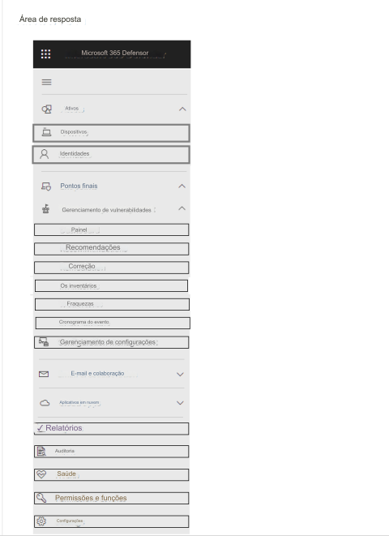

184- PONTO DE ACESSO
Você tem uma assinatura do Microsoft 365 E5.
Você precisa revisar e implementar a integração de dispositivos Microsoft 365 Defender. A solução deve
atender aos seguintes requisitos:
• Visualize dispositivos integrados que possuem a versão baseada em Chromium para Microsoft Edge instalada.
• Baixe um pacote de integração para um dispositivo Windows 11.
• Minimize o esforço administrativo.
Quais são as duas configurações que você deve usar no portal Microsoft 365 Defender? Para responder, selecione as
configurações apropriadas na área de resposta.
NOTA: Cada seleção correta vale um ponto.
